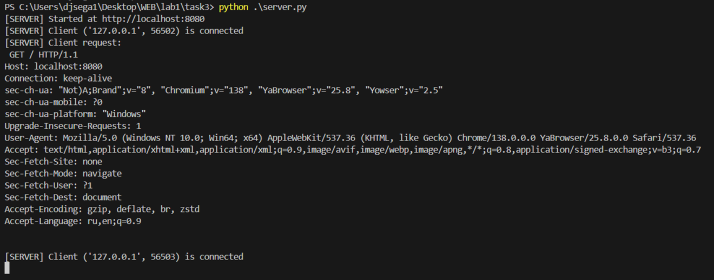
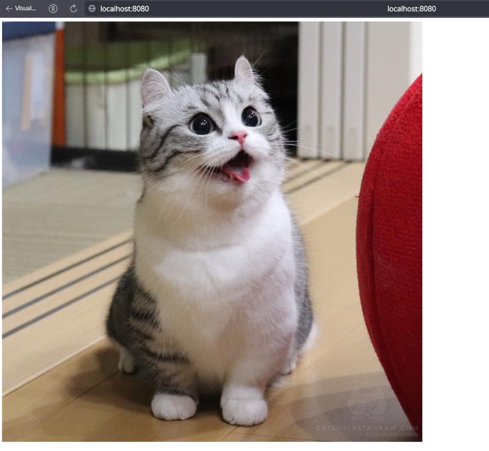

Задание 3 (HTTP ответ с HTML страницей)
HTML Разметка:
<!DOCTYPE html>
<html lang="ru">
<head>
<meta charset="UTF-8">
</head>
<body>
<img src="https://i.pinimg.com/1200x/d2/89/f8/d289f86db56580ad99096c8a4e748cfc.jpg" alt="komaru_cat">
</body>
</html>
Сервер:
def http_server():
server_socket = socket.socket(socket.AF_INET, socket.SOCK_STREAM)
server_socket.bind((SERVER_ADDRESS, SERVER_PORT))
server_socket.listen(MAX_CONN)
print(f"[SERVER] Started at http://{SERVER_ADDRESS}:{SERVER_PORT}")
while True:
client_socket, client_address = server_socket.accept()
print(f"[SERVER] Client {client_address} is connected")
request = client_socket.recv(BUF_SIZE).decode()
print("[SERVER] Client request:\n", request)
try:
with open("index.html", "r", encoding="utf-8") as f:
body = f.read()
response = (
"HTTP/1.1 200 OK\r\n"
"Content-Type: text/html; charset=utf-8\r\n"
f"Content-Length: {len(body.encode())}\r\n"
"Connection: close\r\n"
"\r\n"
f"{body}"
)
except Exception as e:
print("[SERVER] Exception:", e)
response = (
"HTTP/1.1 500 Internal Server Error\r\n"
"Content-Type: text/html; charset=utf-8\r\n"
"Connection: close\r\n"
"\r\n"
"<h1>500 - Internal Server Error</h1>"
)
client_socket.sendall(response.encode())
client_socket.close()
Запуск:
cd task3
python server.py
Открыть в браузере: *тык*
Пример работы:

